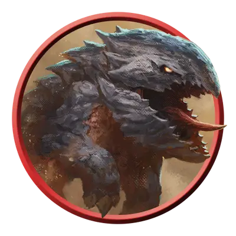

Щенок панцирницы
Bulette Pup
Среднее Чудовище, без мировоззрения

Класс Защиты 16 Инициатива −1 (9)
Хиты 45 (6к8 + 18)
Скорость 30 футов, Копания 20 футов
| мод | спас | ||
|---|---|---|---|
| СИЛ | 16 | +3 | +3 |
| ЛОВ | 8 | −1 | −1 |
| ТЕЛ | 17 | +3 | +3 |
| мод | спас | ||
|---|---|---|---|
| ИНТ | 2 | −4 | −4 |
| МДР | 10 | +0 | +0 |
| ХАР | 4 | −3 | −3 |
Чувства пассивное Восприятие 14, Чувство вибрации 60 футов
Языки нет
Опасность 2 (450 опыта; БВ +2)
Действия
Укус. Бросок рукопашной атаки: +5, досягаемость 5 фт. Попадание: 14 (2к10 + 3) Колющего урона.
Бонусные действия
Прыжок. После разбега в 10 футов щенок панцирницы может прыгнуть на расстояние до 30 футов.
Бонус мастерства +2
Среда обитания Горы, Луга, Холмы
Сокровища Отсутствуют
Панцирницы
Ненасытные сухопутные акулы
Панцирницы, или «сухопутные акулы», — целеустремлённые хищники, которые в погоне за добычей могут рыть тоннели, перепрыгивать препятствия и даже пробивать их будто тараны. Они стремительно зарываются под землю, оставаясь при этом близко к поверхности. Как только панцирница чувствует движение, она мгновенно выпрыгивает из-под земли, смыкая на добыче свои огромные челюсти.
Детёнышей панцирницы называют щенками. Они путешествуют небольшими группами и используют численное преимущество, чтобы побеждать более крупных противников. Их прибытие часто предвещает появление взрослой панцирницы.